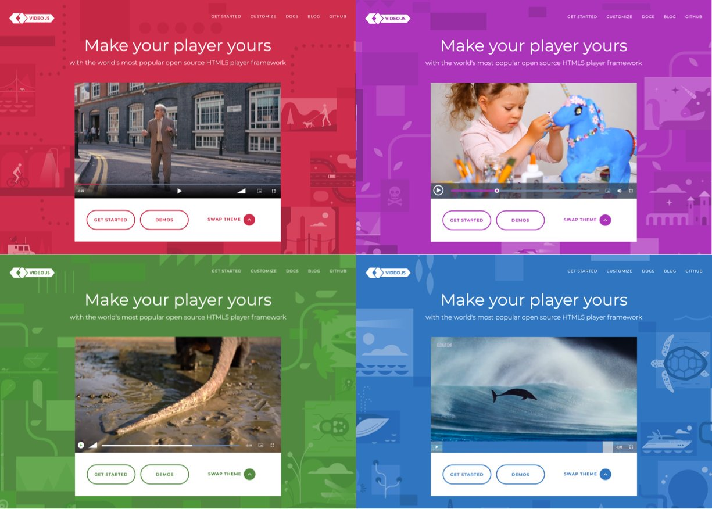

Mình đang làm một dự án có sử dụng Video.js để phát video. Ở đây, mình dùng Google Tag Manager để lưu vết sự kiện. Tuy nhiên, có một số sự kiện sẽ kéo theo liên tục nếu các bạn chỉ chăm chăm vào track sự kiện mặc định của Video.js.

Các bạn có thể sử dụng thẻ <video> mặc định của HTML5. Tuy nhiên sẽ có một số nhược điểm sau,
theo như trên trang chủ của Video.js.
Một số sự kiện mình cần phải track như:
Cứ bình tĩnh mà track:
Sự kiện Seek chính là hành động người dùng muốn tua đến một đoạn khác. Sự kiện này gồm một chuỗi các sự kiện sau:
Mục đích của việc track sự kiện Seek là biết được người dùng tua đến thời gian bao nhiêu của đoạn clip, nên ta cứ
đặt ở sự kiện Ended. Có một điểm là các bạn sẽ thấy có sự kiện Pause và làm sao để vô hiệu
hoá nó trong hành động này? Để ý một tí, các thap tác trên giao diện lần lượt là:
Mấu chốt là phải click vào thời điểm mình muốn tua đến. Thanh đó gọi là SeekBar. Vậy mình chỉ cần
lắng nghe sự kiện click của SeekBar là được.
Chuỗi sự kiện của nó gồm:
Nhìn vậy chứ cũng dễ, ở sự kiện Pause bạn kiểm tra xem phim đã hết chưa. Hết rồi thì bỏ qua sự kiện này
đi.